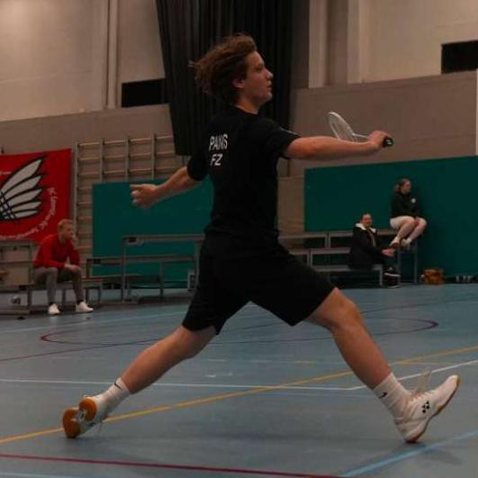

Badminton

Badminton is mijn grootste hobby. Ik speel ondertussen al meer dan 6 jaar badminton en train meerdere keren per week. Wat ik leuk vind aan badminton is de combinatie van snelheid, techniek en tactiek. Daarnaast speel ik regelmatig tornooien en interclubwedstrijden.
Website Badminton Vlaanderen